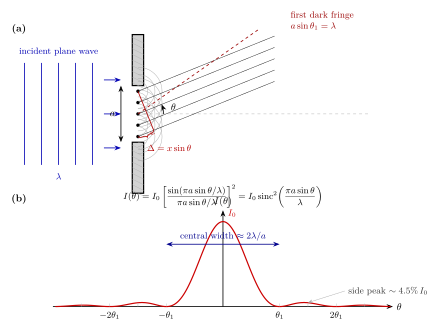

光为什么能绕过障碍物?
生活里有两个场景并不起眼却值得细看. 第一个: 深夜站在走廊, 隔壁房间开着灯, 门只留了一条两三毫米宽的缝. 几何光学告诉你, 光从缝里出来后应该仍然是一条窄窄的、跟缝等宽的光带; 但实际上你往旁边走两步, 还是看得到从门缝里漏出的微光 —— 光从缝里出来后明显向两边张开了. 第二个: 海边一排防波石, 远处长浪袭来, 石头与石头之间有一米宽的空隙, 浪过了空隙以后并没有维持一道窄水纹, 而是像从空隙里辐射出去的一簇弧形波, 向后方的沙滩扇形扩散.
两个场景讲的是同一件事: 当一个波遇到一个 "开口" 而开口的尺度与波长可比时, 波会向开口后方扩散, 这个现象叫做 衍射 (diffraction). 光和水波遵守同一套数学, 这一点本身就是本书反复要强调的事. 本节我们就从惠更斯的几何想象开始, 把门缝里漏出来的光张开到多宽, 从纸笔推到毫弧度.
一、惠更斯的次级波前: 1678 年的一个几何诡计
牛顿相信光是粒子, 理由之一就是 "光走直线": 如果光是波, 应该像声波那样拐过墙角, 可事实上墙后面是黑的. 同时代的惠更斯 (Christiaan Huygens) 不同意. 1678 年, 惠更斯在 Traité de la Lumière 中给出了一个几何的办法来说明波是怎么传播的, 这个办法后来被称为 惠更斯原理 (Huygens' Principle):
波阵面上的每一点都可以看作是一个发射次级球面波的新波源, 下一时刻的波阵面就是这些次级球面波的包络面.
这是一个非常朴素的几何递推: 如果我知道 $t$ 时刻的波前是什么形状, 那我在波前上每点画一个半径为 $c\,\Delta t$ 的小球面, 把所有小球面的外包络画出来, 就得到 $t+\Delta t$ 时刻的波前. 对于无边无际传播的平面波, 这个递推会给出一个依然平坦的新波前 —— 直行得到保证. 对于一个被障碍物挡住的波, 递推就会出问题: 障碍物的边缘之外, 次级球面波会向阴影区域 "渗入", 这正是光应当绕到障碍物后面的根源.
惠更斯的原始版本只有几何, 没有相位, 所以它能解释为什么波前会弯, 却不能解释为什么屏上会出现亮暗条纹. 一百五十年后, Fresnel 把惠更斯的 "次级波源" 和杨 (Young) 刚发现的 "相干叠加" 放在一起, 变成 惠更斯–菲涅尔原理 (Huygens–Fresnel principle): 次级球面波各自带有振幅和相位, 屏上某一点的合振幅是所有次级波在该点的相干和. 这是把波动光学从定性变成定量的那一步.
这个思想的力量在哪里? 在于它把一个在空间中连续展开的衍射问题, 变成了一个可以显式写下来的积分. 下面我们就用它来算最简单、也最有代表性的情况 —— 一个无穷长、宽度为 $a$ 的单缝.
二、把缝切成 N 片: 单缝积分与 sinc 结果
设一束波长为 $\lambda$ 的平面单色光垂直入射到一块不透光屏上, 屏上开了一条竖直的窄缝, 缝宽 $a$ (沿 $x$ 方向), 缝的高度 (沿 $y$ 方向) 远远大于 $a$, 我们只考虑 $x$ 方向的一维问题. 缝后方很远处有一个观察屏, 我们讨论屏上与中央正前方夹角为 $\theta$ 的那一点接收到的光强.
按照惠更斯–菲涅尔原理, 缝内 $-a/2 \le x \le a/2$ 的每一点都是一个次级波源. 把缝分成 $N$ 小段, 每段中心在 $x_n$, 宽度 $\Delta x = a/N$, 发出的次级波到达观察点时贡献一个小振幅 $\Delta A_n$. 因为我们讨论的是远场 (Fraunhofer 条件), 从不同 $x_n$ 出发的射线可以认为互相平行, 夹角都是 $\theta$. 那么在同样的时间原点, 从 $x_n$ 出发的波到达观察点比从原点 ($x=0$) 出发的多走一段 $x_n\sin\theta$ 的路程, 相应的相位差是 $k x_n\sin\theta$, 其中 $k=2\pi/\lambda$.
把所有小段加起来, 当 $N\to\infty$ 时求和变成积分:
$$ A(\theta) \;\propto\; \int_{-a/2}^{a/2} e^{\,i k x \sin\theta}\,\mathrm{d}x \;=\; \frac{e^{\,i k a\sin\theta/2}-e^{-i k a\sin\theta/2}}{i\,k\sin\theta} \;=\; a\,\mathrm{sinc}\!\left(\frac{\pi a\sin\theta}{\lambda}\right). \tag{1} $$
这里 $\mathrm{sinc}(x)\equiv \sin(x)/x$, 其中 $x=\pi a\sin\theta/\lambda$. 这个积分里没有一丝神秘, 它只是 "一条均匀亮线" 的傅里叶变换; 它的出现本身就暗示: 只要你相信 Huygens–Fresnel, 单缝的衍射图就 必然 是一个矩形孔径的傅里叶变换. 光强是振幅模方, 取 $I_0 = |A(0)|^2/(\cdots)$ 作归一化:
$$ I(\theta) \;=\; I_0\left[\frac{\sin(\pi a\sin\theta/\lambda)}{\pi a\sin\theta/\lambda}\right]^2 \;=\; I_0\,\mathrm{sinc}^2\!\left(\frac{\pi a\sin\theta}{\lambda}\right). \tag{2} $$
这是本节最核心的公式, 几乎所有关于单孔衍射的结论都是从它读出来的. 让我们把公式 (2) 翻译成几个可操作的事实:
- 中央主峰: $\theta=0$ 时 $\mathrm{sinc}(0)=1$, $I=I_0$. 这是强度最大的方向, 也就是几何光学意义上 "光直走" 的那一束.
- 第一暗纹: $\mathrm{sinc}$ 的第一个零点在 $\pi a\sin\theta/\lambda = \pi$, 即 $$a\sin\theta_1=\lambda.$$ 这是衍射几何里唯一必须记住的关系, 几何解释也很直观: 把缝分成上下两半, 每一半里都能找到一个子源与另一半的某个子源路径差恰好是 $\lambda/2$, 它们两两相消.
- 中央亮纹宽度: 两个第一暗纹之间张开 $2\sin\theta_1 \approx 2\lambda/a$ (小角度下). 这个量就是光 "绕过" 缝之后散开的锥角, 是本节要反复用到的关键量.
- 次峰高度: 下一个主峰在 $\pi a\sin\theta/\lambda \approx 3\pi/2$, 数值解为 $\mathrm{sinc}^2(3\pi/2)=(2/3\pi)^2\approx 0.0450$, 也就是中央亮度的 4.5%, 基本上在大多数情况下可以忽略. 单缝衍射之所以看上去像 "中间一大坨, 边上鬼影", 就是这个数量级的对比.

三、代两个数字: 门缝里漏出多少光, 瞳孔又看多细?
公式写到这里, 如果不代一两个真实的数进去, 很容易停留在符号游戏的层面. 本节最核心的数字关系就一条 — "光通过宽为 $a$ 的缝, 会张开大约 $\lambda/a$ 这么大的角" — 我们用它来估两个非常不同尺度的情况.
3.1 门缝: 一条两毫米的光带为什么看着这么亮?
回到开头那条门缝. 设可见光的典型波长 $\lambda = 500\ \mathrm{nm} = 5\times10^{-7}\ \mathrm{m}$, 门缝宽 $a = 0.1\ \mathrm{mm} = 1\times 10^{-4}\ \mathrm{m}$. 第一暗纹角:
$$\sin\theta_1 = \frac{\lambda}{a} = \frac{5\times 10^{-7}}{1\times 10^{-4}} = 5\times 10^{-3}\ \mathrm{rad}.$$
也就是 5 毫弧度, 换算成度数是 $5\times 10^{-3}\times(180/\pi)\approx 0.29^\circ$. 换成实际空间距离: 如果你在距门缝 3 米的地方, 光带的中央亮纹半宽就是 $3\ \mathrm{m}\times 5\ \mathrm{mrad}=1.5\ \mathrm{cm}$. 一条 0.1 mm 宽的缝, 光从里面出来在 3 米外已经摊开成 3 厘米宽的亮条. 几何光学完全没法预测这件事 — 它会告诉你亮条还是 0.1 mm — 但你的眼睛天然就相信波动光学: 你在走廊里横向挪动 3 厘米, 光还 "跟着" 你, 那就是 $\sin\theta=\lambda/a$ 的这条关系在支配.
顺便说, 门缝如果开到 $a = 1\ \mathrm{cm}$, 第一暗纹角变成 $5\times 10^{-5}\ \mathrm{rad}$, 在 3 米外对应 0.15 mm 的 "衍射展宽", 完全小于缝本身的几何宽, 这时几何光学就够用了, 没人会觉得有衍射. "缝越窄, 衍射越显" 是这条公式最直观的推论.
3.2 瞳孔: 你其实看不见那么多
第二个数字更有意思. 人眼的瞳孔在较暗环境下大约张开 $a=5\ \mathrm{mm}$; 这个 "缝" 虽然是圆形不是矩形 (严格说应当用 Airy 模式, 首暗纹 $\sin\theta_1=1.22\lambda/D$, 下一节讨论), 但数量级估计仍然可用 $\lambda/a$:
$$\sin\theta_{\min}\sim \frac{\lambda}{a}=\frac{5\times 10^{-7}}{5\times 10^{-3}}=1\times 10^{-4}\ \mathrm{rad}=100\ \mu\mathrm{rad}.$$
换算成角秒: $1\times 10^{-4}\times (180/\pi)\times 3600\approx 20''$. 也就是说人眼的衍射极限角分辨率大约是 20 角秒. 在 25 cm 处 (近视最近明视距离), 这对应物理尺寸 $25\ \mathrm{cm}\times 1\times 10^{-4}=25\ \mu\mathrm{m}$, 25 微米. 实际上视网膜上的感光细胞间距也大致在这个量级 — 这不是巧合, 这是演化让眼睛的感光器密度和瞳孔的衍射极限 匹配. 若感光器更密, 是浪费; 若更稀疏, 就是不识波动光学给的上限.
同样的估计对光学仪器也有效: 8 米口径的天文望远镜在 500 nm 下的衍射极限是 $5\times 10^{-7}/8\approx 6\times 10^{-8}\ \mathrm{rad}$, 即 0.013 角秒 — 远比大气湍流给的 "视宁度" 要锐利, 这就是为什么造大镜子还不够, 还要主动光学和自适应光学去 "修掉" 大气. 这些都是下一节的话题, 但根都扎在公式 (2) 的 $\lambda/a$ 里.
四、几何极限、瑞利判据, 与 1818 年法国科学院的那场豪赌
4.1 两个极限: $a\gg\lambda$ 与 $a\sim\lambda$
从公式 (2) 出发, 取两个极端:
- $a\gg\lambda$ (几何极限): 中央宽度 $2\lambda/a\to 0$, 整个强度分布变成一个极窄的 $\delta$ 函数 — 光 "直走", 不绕射. 这就是 几何光学 的边界条件; 也就是为什么我们用手电筒照墙, 看到的是一圈跟光孔差不多大的光斑, 没有 "张开". 几何光学不是错的, 它是波动光学在 $\lambda\to 0$ 下的极限, 正如牛顿力学是相对论在 $v/c\to 0$ 下的极限.
- $a\sim\lambda$ (散射极限): 当 $a$ 接近或小于 $\lambda$ 时, $\sin\theta_1=\lambda/a$ 可能大于 1, 也就是说 "第一暗纹" 根本不存在, 强度分布在整个半球内大致均匀 — 这时小缝几乎退化成一个点源, 在全方向向外辐射. 这是光波在亚波长孔径后的行为, 也是近场光学、纳米孔阵列等 "异常光透射" 问题的出发点.
同一个 sinc² 表达式能涵盖这两个极端, 正体现了公式 (2) 是一把从几何光学一路联到纳米光学的通用尺子. 我们把这种 "看一眼公式就知道它的极限应该怎样" 的操作反复用 —— 在物理里, 一个公式的价值很大程度上就在于它两端的极限都合理.
4.2 瑞利判据: 两个点源什么时候分得开
顺着公式 (2) 自然问: 如果屏上不是一个亮纹而是两个亮纹 (来自两个靠得很近的点光源经同一缝成像), 多近它们就分不开了? 答案是: 只要第二个亮纹的中央峰落在第一个亮纹的第一暗纹里, 两者就还能 "看出是两个". 这就是 瑞利 (Rayleigh) 判据, 对应的最小可分辨角就是 $\theta_{\min}\approx\lambda/a$ (圆孔带 1.22 系数). 上面算的瞳孔 20 角秒就是这个判据给的. 瑞利判据本身不是一个物理定律, 而是一个工程约定, 但它之所以能站住, 是因为 sinc² 的第一暗纹落得特别干净, 中间的 "谷" 有约 1.2 倍于峰顶的对比, 凭人眼完全能分辨.
4.3 1818 年: Fresnel, Arago 与 Poisson 的 "反证 ⇒ 正证"
整件事情最精彩的部分不是公式, 是 1818 年的一场科学史. 那年法国科学院开出了一个大奖, 征集关于光的衍射的理论. 年轻工程师 Augustin-Jean Fresnel (菲涅尔) 提交了一篇长文, 正是把 Huygens 的几何想象和 Young 的相干叠加结合起来, 写出了类似公式 (1) 那样的积分, 做出了完整的衍射图样预测.
评委中有一位著名的粒子说支持者 Siméon Denis Poisson (泊松). 他为了反驳 Fresnel, 使劲用 Fresnel 自己的积分做推导, 得到一个他认为荒谬到极点的结论: 如果你在一束光前放一个圆形不透光的挡板, 那么在挡板正后方的阴影中心, 应该有一个亮点. Poisson 把这个结果丢在会上, 意思是说 "这显然违反常识, 所以你的理论是错的".
评委会主席 François Arago (阿拉戈) 决定真的做一次实验. 他在暗室里把一枚小金属圆盘挂在光路上, 找 Poisson 所说的 "阴影中心", 结果 — 那里真的有一个亮点. Fresnel 赢得了大奖, 那个亮点后来被叫做 Poisson's bright spot 或 Arago spot. 这是一个非常诗意的结果: 一个本来想作为反证的预测, 反而变成了波动论最决定性的胜利之一. 此后的一百年里, 波动光学几乎没受到严肃挑战, 直到 1905 年 Einstein 用光量子重新把问题打开 (这是第三部分的事).
从方法上看, Poisson 那一步也很漂亮: 衍射图案的中心亮斑, 按 Huygens–Fresnel 讲, 是因为挡板边缘发出的所有次级球面波到达正后方轴上某一点时的路径长度 全部相等, 所以它们必然相干叠加出极大. 这是一个纯几何的论证, 不需要算 sinc, 不需要算积分 — 只需要相信波是沿波前的次级球面波的包络. 这正是本节开头介绍的惠更斯思想最干净的一次亮相.
小结
本节我们用 Huygens 1678 年的几何思想加上 Fresnel 的相干求和, 把单缝衍射写成一个清清楚楚的傅里叶积分, 得到 sinc² 强度分布, 并代入门缝 (0.1 mm → 5 mrad) 和瞳孔 (5 mm → 100 μrad) 两个尺度验证了 $\lambda/a$ 这条关系. 回答标题的问题: 光之所以能 "绕过" 障碍物, 不是因为光线会拐弯, 而是因为光根本不是射线 — 它是波前上所有次级波的相干叠加, 缝越窄, 缝内的相位一致性越完整, 合成波就越向所有方向散开. 几何光学 ($a\gg\lambda$) 和亚波长散射 ($a\sim\lambda$) 都只是同一公式的两个端点. 对 "光是什么" 这个大问题来说, 本节给出了一条新的回答: 光是一种能让你预测 "阴影中心该有亮点" 的东西. 下一节我们把这条 $\lambda/a$ 继续推到一般的圆孔和成像系统上, 看它如何设定所有光学仪器的极限 — 这就是衍射极限与 Abbe 判据.
▲